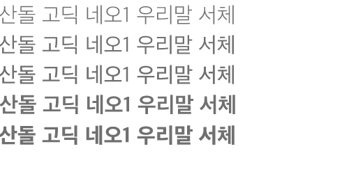

Shape and Color - Poster Plan
실제 이미지를 이용하여 포스터를 만드는 실사 이미지의 위력 과제.
나는 뛰어오르고, 달리다라는 주제를 바탕으로 하여,
나의 사진들을 이용해 작품을 만들기로 계획했다.
Jump and Run
Vivid and Bright Colors
RED
YELLOw
BLUE
Typography
Shape style
Geometric, Shapes